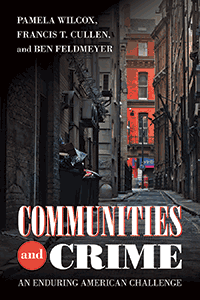

<body bgcolor="#FFFFFF" text="#000000" link="#0000FF" vlink="#CC0000" alink="#CC0000"><center><hr width="350" size="1" align="center" noshade>A systematic exploration of how criminology has accounted for the role of community over the past century<hr width="350" size="1" align="center" noshade><p><a href="https://cdcshoppingcart.uchicago.edu/Cart/ChicagoBook.aspx?ISBN=&&PRESS=temple" target="_top">Buy this book!</a> | <a href="https://cdcshoppingcart.uchicago.edu/Cart/Cart.aspx?PRESS=temple" target="_top">View Cart</a> | <a href="https://cdcshoppingcart.uchicago.edu/Cart/Cart.aspx?PRESS=temple" target="_top">Check Out</a></p><p></p></center><!--none//--><h1 class = "booktitle">Communities and Crime</h1> <h1 class = "subtitle">An Enduring American Challenge</h1>
<h3>Pamela Wilcox, Francis T. Cullen, and Ben Feldmeyer </h3>
paper: $29.95, Dec 17<BR>EAN:&nbsp;978-1-59213-974-3<BR><font color=#990033>Not Yet Published Preorder</FONT><font size=-7><br>&nbsp;</font></p><p class="info">cloth: $99.50, <BR>EAN:&nbsp;978-1-59213-973-6<BR><font color=#990033>Not Yet Published Preorder</FONT><font size=-7><br>&nbsp;</font></p><p class="info">e-book: $29.95, <BR>EAN:&nbsp;978-1-59213-975-0<BR><font color=#990033>Not Yet Published Preorder</FONT><font size=-7><br>&nbsp;</font></p></p></td></tr></table>
<BR> <p class="info">282 pp<BR> 6 x 9<BR> 10 line drawings <p class="info"><font size=-7>&nbsp;</font></p><p class="info">
</P><BLOCKQUOTE></BLOCKQUOTE>
<p>Social scientists have long argued over the links between crime and place. The authors of <i>Communities and Crime</i> provide an intellectual history that traces how varying images of community have evolved over time and influenced criminological thinking and criminal justice policy.<br/><br/>The authors outline the major ideas that have shaped the development of theory, research, and policy in the area of communities and crime. Each chapter examines the problem of the community through a defining critical or theoretical lens: the community as social disorganization; as a system of associations; as a symptom of larger structural forces; as a result of criminal subcultures; as a broken window; as crime opportunity; and as a site of resilience. <br/><br/>Focusing on these changing images of community, the empirical adequacy of these images, and how they have resulted in concrete programs to reduce crime, <i>Communities and Crime </i>theorizes about and reflects upon why some neighborhoods produce so much crime. The result is a tour of the dominant theories of place in social science today.<br>
<P CLASS="top"><A HREF="#top">BACK TO TOP</A></P>&nbsp;
<BR>&nbsp;
&nbsp;<P>
</P><BR>&nbsp;
<H2 class="inpageheading"><A NAME="author bio"></a>About the Author(s)</H2><p><b>Pamela Wilcox</b> is Professor of Criminal Justice and Fellow of the Graduate School at the University of Cincinnati. She is the co-author of <i> Criminal Circumstance: A Dynamic Multicontextual Criminal Opportunity Theory</i> and co-editor of <i> Challenging Criminological Theory: The Legacy of Ruth Rosner Kornhauser.</i><br>
<p><b>Francis T. Cullen</b> is Distinguished Research Professor Emeritus and Senior Research Associate in the School of Criminal Justice at the University of Cincinnati. He is co-author of <i> Criminological Theory: Context and Consequences</i> and co-editor of <i>The Oxford Handbook of Criminological Theory.</i><br>
<p><b>Ben Feldmeyer</b> is Associate Professor in the School of Criminal Justice at the University of Cincinnati.<br>
<P CLASS="top"><A HREF="#top">BACK TO TOP</A></P>
<p><h2 class="inpageheading"><a name="subjects"></a>Subject Categories</h2> <p><a href="http://www.temple.edu/tempress/urban.html" target="_top">Urban Studies</a> <br><a href="http://www.temple.edu/tempress/law.html" target="_top">Law and Criminology</a> <br><a href="http://www.temple.edu/tempress/geography.html" target="_top">Geography</a> <br><a href="" target="_top"></a> <br><a href="" target="_top"></a> </p>
</p>
<P>
<h2 class="inpageheading">In the Series</h2>�
<p>�<a target="_top" href="http://www.temple.edu/tempress/urban_life.html" OnMouseOver="window.status='Click for other books in this series!';return true;"OnMouseOut="window.status=" ><i>Urban Life, Landscape, and Policy</i></a></P>
<p><p>
The <em>Urban Life, Landscape, and Policy</em> Series, edited by David Stradling, Larry Bennett, and Davarian Baldwin, was founded by the late Zane L. Miller to publish books that examine past and contemporary cities, focusing on cultural and social issues. The editors seek proposals that analyze processes of urban change relevant to the future of cities and their metropolitan regions, and that examine urban and regional planning, environmental issues, and urban policy studies, thus contributing to ongoing debates.
</p></P>
�</P>��
</P>
<p align="center"><a href="https://cdcshoppingcart.uchicago.edu/Cart/ChicagoBook.aspx?ISBN=&&PRESS=temple" target="_top">Buy this book!</a> | <a href="https://cdcshoppingcart.uchicago.edu/Cart/Cart.aspx?PRESS=temple" target="_top">View Cart</a> | <a href="https://cdcshoppingcart.uchicago.edu/Cart/Cart.aspx?PRESS=temple" target="_top">Check Out</a></p><p><font face="Arial" size="1"><a href="copyright.html" onMouseOver="window.status='Web Copyright Policy';return true;" onMouseOut="window.status=''" title="Web Copyright Policy">&copy;</a> 2018 <a href="http://www.temple.edu" target="new" onMouseOver="window.status='Link to Temple University home page';return true;" onMouseOut="window.status=''" title="Link to Temple University home page">Temple University</a>. All Rights Reserved. http://www.temple.edu/tempress/titles/2012_reg.html</font></p>